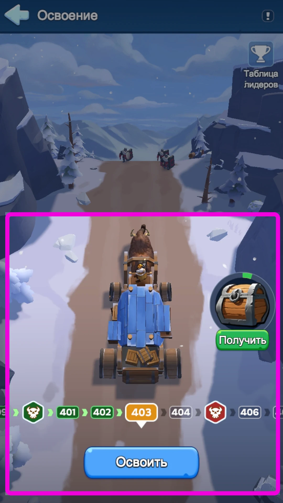
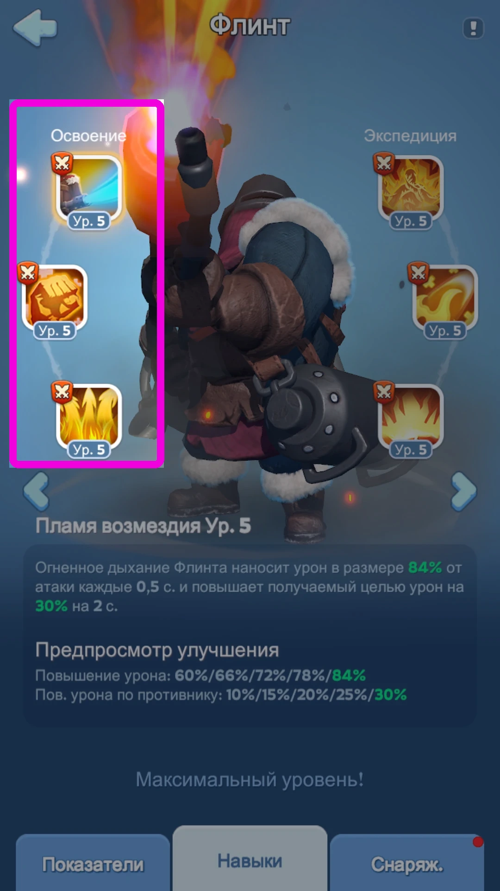
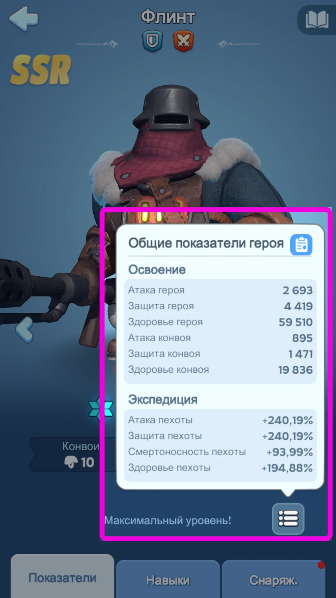
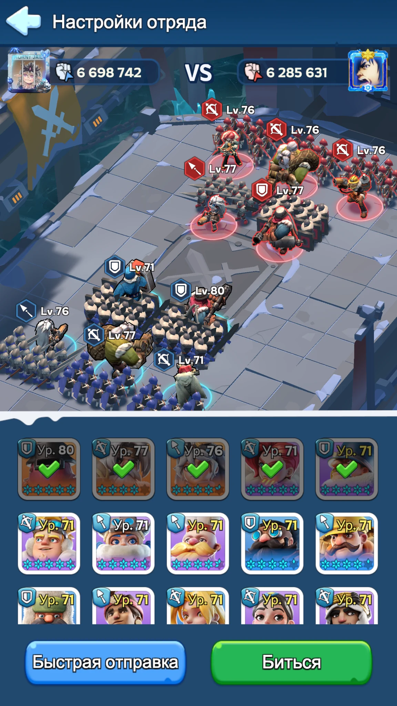
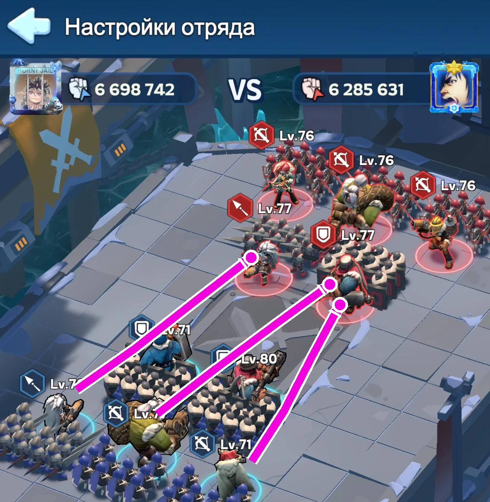
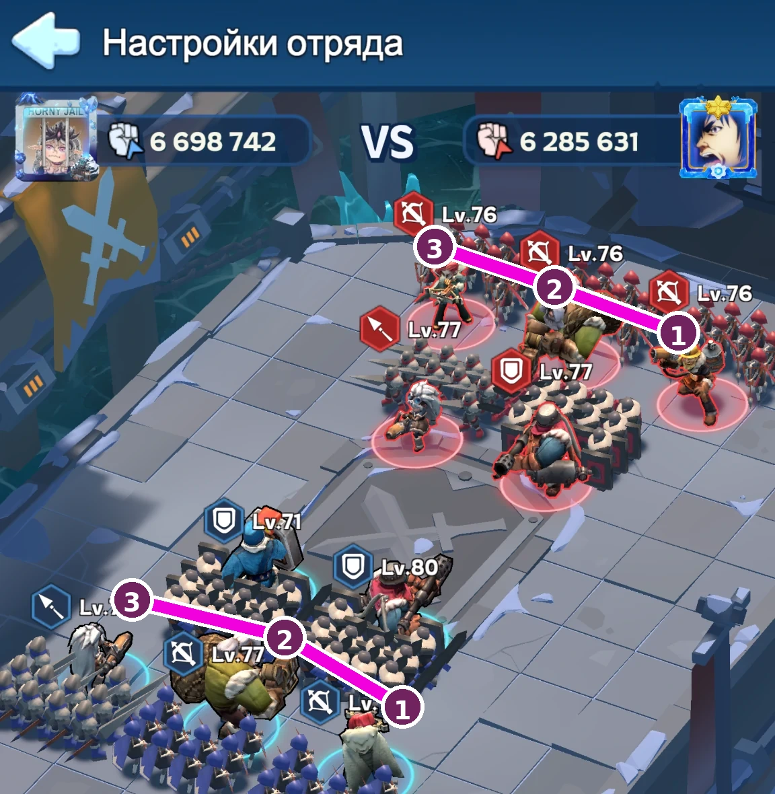
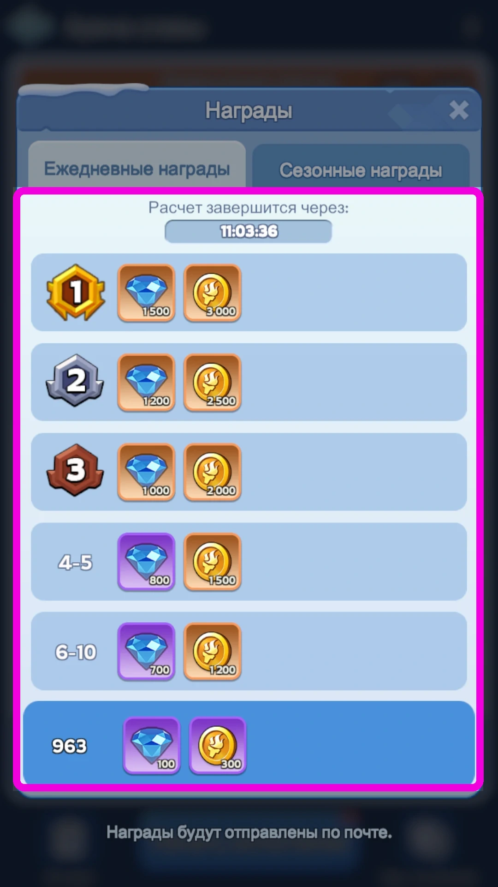
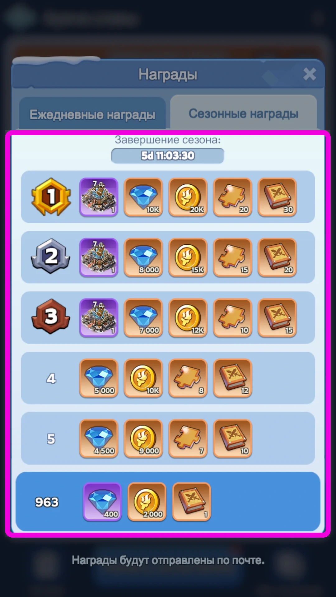
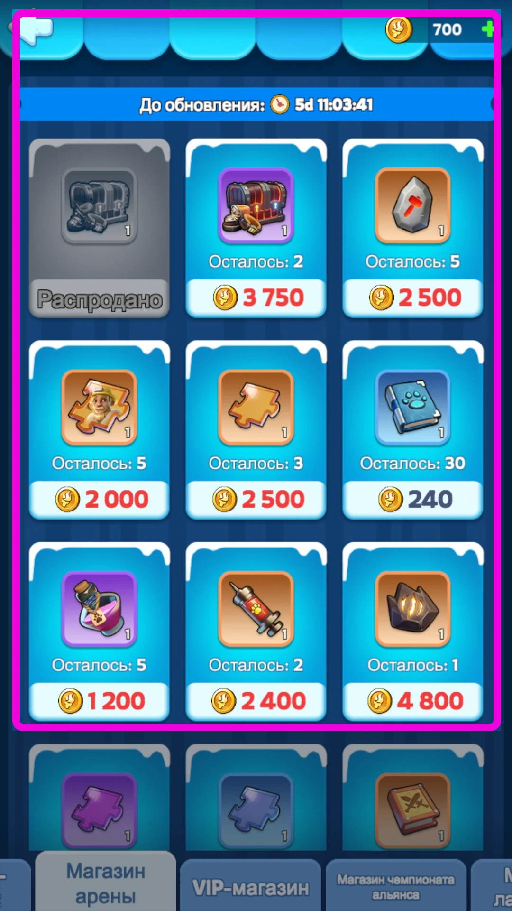

Арена требует надёжности: попытки ограничены, а каждая ошибка влияет на рейтинг. В Освоении можно пытаться сколько угодно, поэтому там нормально много раз менять позиции и подбирать решение под конкретный этап.
При этом механика позиций, выбора целей и навыков остаётся общей для обоих режимов.

У Арены и Освоения разные условия боя. На Арене вы чаще встречаете актуальных героев игроков и сравнительно близкие по силе команды. В Освоении боты нередко сильно превосходят вас по чистой силе, но стоят неудачно — и эту расстановку нужно разбирать позициями и порядком целей. Победа при почти двукратном отставании по силе здесь вполне нормальна.
Для этих двух режимов смотрим на навыки Освоения — левый столбик на экране героя — и на блок «Освоение» в общей таблице показателей героя. Правая колонка навыков и блок «Экспедиция» к этому руководству не относятся.

На этом экране смотрим левую колонку. Это навыки Освоения. Для Арены и Освоения важны именно они.

Для Арены и Освоения в общей таблице показателей смотрим блок «Освоение».
Не смешивайте разные режимыОдин и тот же герой может по-разному работать в Арене, Освоении, походах и ралли. Для этого руководства важны только навыки Освоения и блок «Освоение» в характеристиках.
2. Расстановка влияет на результат

Базовая расстановка для Арены: два героя фронта и три героя задней линии. Обычно достаточно одной проверенной схемы, которую вы меняете только под конкретную задачу.
На Арене нужна надёжная схемаНет смысла переставлять пятёрку перед каждым соперником без причины. Держите одну рабочую расстановку, в которой понятно, кто принимает первый урон, кто живёт дольше и как распределяется стартовый фокус.
В Освоении позиции нужно крутитьЕсли этап не проходится, меняйте героев местами. Один сдвиг может изменить первую цель противника, время смерти фронта и момент применения ваших навыков.
Иногда сильного героя лучше убрать в левый уголВ Освоении это позволяет дольше сохранить ключевого героя живым. При такой расстановке до него часто добираются последним. Это не постоянная схема, а вариант под конкретный этап.
3. Кто кого бьёт
Перед боем смотрите не только на мощь, но и на позиции противника. У задней линии есть конкретные стартовые цели. Если понимать эту схему, проще заранее увидеть, кто попадёт под фокус и кого стоит переставить.

Старт боя. Стартовый фокус определяется позицией героя на поле, а не самим героем. Для каждого слота он постоянный: линии показывают, кого атакуют герои задней линии из этих трёх позиций.

После смерти фронта навыки идут по задней линии справа налево. Эта логика одинаковая для обеих сторон: и у противника, и у игрока порядок целей идёт 1 → 2 → 3.
Следите за первым фокусом
Если один герой сразу получает слишком много урона, часто проще переставить его, чем пытаться компенсировать это общей силой.
Смотрите, когда умирает фронт
После смерти фронта бой меняется: открывается задняя линия, и навыки начинают идти по порядку справа налево.
В Освоении иногда полезен ручной запуск навыков
Если навык вот-вот уйдёт в почти мёртвую цель, можно на короткий момент отключить автоприменение, подождать долю секунды и включить его снова, чтобы удар пришёлся по другой цели.
4. Герои и снаряжение
Нужны актуальные герои
Для Арены и Освоения особенно важны мифические герои хотя бы от 3★ с прокачанными навыками Освоения. Если герои устарели, одной удачной расстановкой разницу обычно не закрыть.
ФлинтАлонсоМоллиМияСергейПатрикДжессиДжина
Снаряжение нужно всей пятёрке
Три основных героя держим в хорошем снаряжении. Двух второстепенных тоже нужно одеть хотя бы примерно на +20 / +30, чтобы они не были полностью бесполезными и успевали дать навык.
Список героев — примерС появлением новых поколений состав Арены меняется. Смысл остаётся тем же: нужны актуальные герои, звёзды, навыки Освоения, характеристики и правильная позиция на поле.
5. Попытки Арены
Арена — режим на дистанцию. Здесь выгоднее стабильно забирать понятные победы, чем тратить попытки на спорные бои.
Тратьте попытки ближе к расчёту
Чем позже вы поднимаетесь в рейтинге, тем меньше времени остаётся соперникам, чтобы опустить вас обратно. Ориентируйтесь на таймер расчёта в самой Арене.
За гемы — 1, максимум 2 дополнительные попытки
Покупать их стоит только тогда, когда есть безопасные цели. Бои «50 на 50» здесь невыгодны.

Ежедневные награды. Имеет смысл тратить попытки ближе к моменту расчёта, чтобы у соперников было меньше времени опустить вас по рейтингу.

Сезонные награды. В финальный день сезона попытки лучше тратить в последние минуты перед расчётом. Так проще подняться как можно выше и оставить соперникам меньше времени, чтобы выбить вас из нужного топа.
Перед атакой смотрим не только мощь, но и пятёрку соперника и её позиции.
Выбираем тех, кого гарантированно побеждаем. Попытка ценнее сомнительного шанса на несколько дополнительных мест.
Если безопасных целей нет — обновляем список и ждём следующего удобного окна, а не идём в заведомо плохой матч.
В последний день сезона не сливаем попытки заранее: финальный рейтинг ценнее обычного дневного подъёма.
6. Магазин Арены
Главная ценность Арены — её магазин. Основная покупка здесь — ящик с мифическим снаряжением героя на выбор. Его стоит забирать регулярно: это один из важных источников мифического снаряжения.

Ящик с мифическим снаряжением — главный приоритет магазина Арены. Конкретная цена на скриншоте не важна. Важно регулярно выкупать сам предмет.
7. Короткий алгоритм
Соберите основную пятёрку: актуальные герои, желательно мифические от 3★, с прокачанными навыками Освоения.
Оденьте всех пятерых: три главных героя — хорошо, два остальных — хотя бы в рабочее снаряжение примерно +20 / +30.
На Арене держите проверенную основную расстановку 2 фронта + 3 задняя линия. Перед сложным соперником смотрите, куда уйдёт стартовый фокус.
В Освоении меняйте позиции героев и при необходимости используйте ручной запуск навыков, если это позволяет не тратить умение в почти мёртвую цель.
Попытки Арены тратьте ближе к расчёту наград. Дополнительно за гемы — обычно 1, максимум 2, только под понятные победы.
На последнем дне сезона оставляйте запас попыток для финального подъёма.
В магазине регулярно забирайте ящик с мифическим снаряжением.